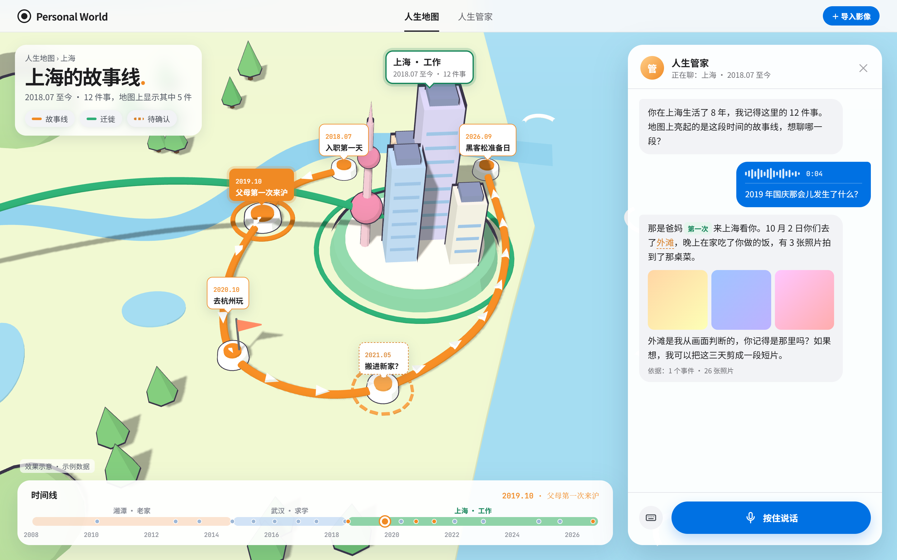

一个人的世界模型：从照片中重建经历过的事，画成一张人生地图，再由一位记得这一切的人生管家陪你回看。
手机里有几万张照片，但相册只能按日期和地点排列文件，回答不了"那几年发生了什么"。Personal World 为每个用户建立一个个人世界模型：他经历过哪些事件，这些事发生在什么时间、什么地方，和谁一起。
这个模型有两种呈现方式。人生地图让人看见它：地点、迁徙和每个地点上的故事线。人生管家让人和它对话：管家是一个大模型，把整个世界模型当作自己的记忆，用户可以直接用语音问它"那时候发生了什么"。
先确定发生了什么事，时间和地点都从事里来。
常见相册从时间出发（按日期排列）或从空间出发（把照片按 GPS 钉在地图上）。Personal World 从事件出发：先把照片归入事件，再从事件中分离出时间线和空间线。
| 从时间出发 | 从空间出发 | 从事件出发（Personal World） | |
|---|---|---|---|
| 基本单位 | 日期 | 坐标点 | 一件事 |
| 缺少元数据时 | 截图、转发图、翻拍老照片的时间不准，排错位置 | 没有 GPS 的照片无法上图 | 可用同一事件里其他照片、画面文字和用户确认来补齐 |
| 地点的分量 | 不体现 | 按照片数量：旅行一天拍 300 张，比老家一年拍 5 张更显眼 | 按发生过的事：在老家发生的事再少，也是人生据点 |
| 能回答的问题 | 那天拍了什么 | 在这里拍了什么 | 那几年我在哪里生活、做了什么、第一次来这里是为了什么 |
示例数据。每个事件向上落到一个地点，向下落到一个时间。地点按人生迁徙顺序连成空间线；虚线表示"出发地"。修改任一事件的时间或地点，两条线同步更新。
顶栏只有这两项。照片地图、照片说话、第一次和最后一次、幻灯片电影这四个能力不设单独入口，也不做成按钮或标签页，而是融进世界模型，由人生管家在对话中自然用上。
3D 卡通风格的地图。人生据点是立体的小建筑，据点之间用迁徙弧线连成空间线；点击一个地点，地图上亮起这个地点的故事线。
一个把世界模型当作记忆的大模型。用户用语音提问，管家依据事件和照片回答，说不准的地方会标出来并请用户确认。
| 能力 | 体现方式 | 示例 | 优先级 |
|---|---|---|---|
| 照片地图 | 人生地图本身：据点、迁徙、故事线 | 点击上海，地图上串起在上海发生的 12 件事 | P0 |
| 照片说话 | 管家讲述时附上照片，讲的是照片所在的整个事件，而不是单张图的描述 | "10 月 2 日你们去了外滩，晚上在家吃了你做的饭，有 3 张照片拍到了那桌菜。" | P0 |
| 第一次，最后一次 | 管家回答时标出"第一次"；故事线上的节点也可带这个标记 | "那是爸妈第一次来上海看你。" | P1 |
| 幻灯片电影 | 管家在合适时主动提议，用户答应后在对话框中播放 | "如果想，我可以把这三天剪成一段短片。" | P2 |

效果示意，示例数据。源文件 docs/mockups/3d-cartoon-map.html。
地图上的每个标记是一个地点，由在那里发生过的事件定义，标记的分量来自事件而不是照片数量。用户在一张图上同时看到空间线（在哪些地方生活过、按什么顺序迁徙）和每个地点上的故事线，底部的时间线与地图联动。
| 概念 | 定义 |
|---|---|
| 事件 | 一件有起止时间、有地点、有参与者的事，例如"毕业典礼""搬家到上海"。由若干照片作为证据。 |
| 地点 | 事件发生的位置，有层级：具体地点（某餐厅）、区域、城市、国家。无 GPS 时可以只确定到城市。 |
| 人生据点 | 长期生活的地点，角色为老家、求学、工作、居住。由一段时间内反复发生的事件推断，需用户确认。 |
| 途经地点 | 旅行、出差等短期到访的地点。 |
| 时间线 | 全部事件按发生时间排列，按人生阶段（如"大学四年"）分段。 |
| 空间线 | 人生据点按迁徙顺序连成的路径。 |
| 故事线 | 某个地点上的事件按时间串成的路线，包括以该据点为出发点的短途旅行。 |
| 编号 | 需求 | 验收标准 | 优先级 |
|---|---|---|---|
| MAP-01 | 3D 卡通地图主视图 | 高德 3D 视角 + 卡通配色底图；人生据点显示为立体小建筑，大小由事件数和据点角色决定，与照片数量无关 | P0 |
| MAP-02 | 空间线 | 据点之间按迁徙顺序显示立体弧线，例如"湘潭 → 武汉 → 上海" | P0 |
| MAP-03 | 点击地点显示故事线 | 镜头拉近到该地点；按时间串起该地点的事件，节点带日期和事件名；其他据点变淡 | P0 |
| MAP-04 | 点击地点同时打开人生管家 | 对话框自动带上"正在聊：上海 · 2018.07 至今"的上下文，管家先开口 | P0 |
| MAP-05 | 对话与地图联动 | 管家提到某个事件时，故事线上的节点高亮，底部时间线定位到该时间 | P0 |
| MAP-06 | 显示不确定性 | AI 推断、未经确认的地点和事件用虚线标记 | P0 |
| MAP-07 | 修正后同步 | 事件的时间或地点被修正后，空间线、故事线、时间线无需刷新即更新 | P0 |
| MAP-08 | 时间线与地图联动 | 底部时间线按人生阶段分段；选中一段时，地图显示当时所在的据点 | P1 |
| MAP-09 | 静止的界面 | 建筑、标记和图标保持静止，不漂浮、不抖动；只在切换地点或时间时移动镜头 | P0 |
人生管家是一个大模型，它的记忆就是用户的世界模型：事件、地点、人物、照片以及用户确认过的信息。它回答问题时只依据这份记忆，记忆里没有的内容直接说不知道，并告诉用户需要补充什么。
| 编号 | 需求 | 验收标准 | 优先级 |
|---|---|---|---|
| BTL-01 | 语音提问 | 按住说话，松开后语音转为文字并显示；支持切换键盘输入 | P0 |
| BTL-02 | 带上下文的对话 | 从地图进入时，管家知道当前地点和时间范围；用户可以用"那时候""那次"指代 | P0 |
| BTL-03 | 依据记忆回答 | 回答中的事件、时间、地点、人物都能追溯到具体事件和照片；显示"依据：N 个事件 · M 张照片" | P0 |
| BTL-04 | 照片说话 | 回答附上相关照片，讲述照片所在的整个事件 | P0 |
| BTL-05 | 区分事实与推断 | 推断的内容在文字中标出，并主动提问确认；确认结果写回事件 | P0 |
| BTL-06 | 第一次，最后一次 | 回答中标出"第一次"；表述为"照片记录中的第一次"；结论能追溯到事件 | P1 |
| BTL-07 | 语音回答 | 管家的回答可以朗读播放 | P1 |
| BTL-08 | 幻灯片电影 | 管家提议后，按事件选片、去除相似照片、配事件字幕，在对话框内播放；地点变化时插入地图移动 | P2 |
| BTL-09 | 从顶栏直接进入 | 不经过地图也能和管家聊，例如"我这几年搬过几次家？"，回答时地图同步展示 | P1 |
"最后一次"可能涉及已离世的亲人、结束的关系。管家不主动提起这类"最后一次"，只在用户明确问到时回答，用户也可以要求不再提及。
// 事件是唯一主数据；时间线、空间线、故事线都由它计算 Event { id, title, summary, type, status: draft | analyzed | confirmed assetIds: string[] // 证据照片 time: { start, end?, precision: minute | day | month | year | season, source: exif | inferred | user, confidence } placeIds: string[] // 一个事件可涉及多个地点，如"离家读大学" people: string[] firsts?: string[] // 如 "第一次来上海"，由事件计算 } Place { id, name, level: poi | district | city | country coord?: { lat, lng } // 存 WGS-84 原始坐标 role?: home | study | work | residence | travel source: gps | inferred | user, confidence } // 派生，不存储 Timeline = events 按 time.start 排序并分阶段 SpaceLine = places 中 role ≠ travel 的据点，按首次事件时间排序 StoryLine(place) = 该地点及从该地点出发的事件，按时间排序
step-3.7-flash，负责事件分析和管家对话。密钥只在服务端读取。Web 预览版已删除与新结构无关的功能，只保留事件底座。
/api/chat 接口（将由人生管家重新实现）| # | 问题 | 影响 |
|---|---|---|
| Q1 | 语音识别、语音合成用哪家服务？ | 决定人生管家的语音链路 |
| Q2 | 比赛演示用谁的照片？是否需要准备一套可公开的示例相册？ | 决定隐私处理和演示数据准备 |
| Q3 | 比赛是否要求使用 NVIDIA 的模型或服务？ | 可能影响大模型与语音的选型 |
| Q4 | 比赛提交 Web 版，还是必须是手机 App？ | 决定是否同步开发 App |
| Q5 | 人生管家要不要有固定的形象和名字？ | 影响对话框设计和语音音色 |